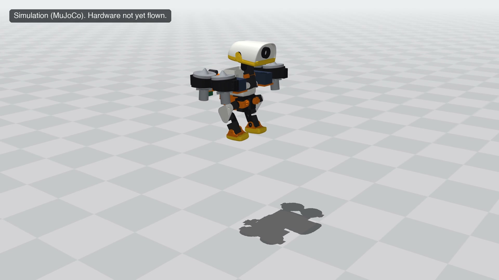

Robot and pack model
MuJoCo 3.10 on the as-built MicroDuck model, with the four-fan pack added as rigid masses taken from the pack CAD and slicer weights.
Personal project · Simulation only · November 2026
Can a 15-joint walking robot take off on four ducted fans, fly to a table, land, and keep standing? So far the answer exists in simulation only.
Status Everything on this page is a MuJoCo simulation. The flight hardware has not been assembled on the robot, bench-tested or flown. Parts are ordered or delivered; none is fitted.
My role Personal extension of my MicroDuck build: the pack model, the flight simulation and its stand-in controller, the leg-policy fine-tuning for the added mass, and the evaluation runs.
The pack roughly doubles the robot's mass: the simulated robot weighs about 1.9 kg with it, against an estimated 0.96 kg without. The walking policy the robot uses today was never trained for that load, and the legs have to survive both the take-off and the landing.
Two controllers share the body. A flight controller drives the fans. The leg policy stands on the ground, hands over to a fixed standing pose once the feet are about 3 cm up, and takes the legs back about 3 cm before touchdown.
MuJoCo 3.10 on the as-built MicroDuck model, with the four-fan pack added as rigid masses taken from the pack CAD and slicer weights.
Quadratic fan thrust with a first-order lag and reaction torque, clockwise and counter-clockwise pairs, and battery voltage sag. Thrust-to-weight is about 1.96 at the vendor's thrust figure.
Cascaded attitude, position and altitude loops with a priority mixer, sensor noise and delay, and a downward rangefinder. It is written to resemble ArduPilot's structure. It is not ArduPilot.
In a 280-episode simulated suite with the pack, the original walking policy fell in 279 episodes. A fine-tuned checkpoint fell in 3. That checkpoint is used in simulation only; nothing is deployed to the robot.
A run counts as a full success only if the robot lifts off, lands upright on the intended surface without hitting anything, and is still standing five seconds after the fans stop, with no tilt over 45 degrees at any time.

Real fan thrust and inlet losses next to the body (one vendor data point per fan is the only input), ground effect and recirculation near the floor and table, heat, real ArduPilot tuning and its land detector, and servo behavior beyond the actuator model. The leg hand-over assumes the walking computer receives the flight controller's height reading with negligible delay; that link does not exist yet.
The next evidence has to come from hardware. Until then this page stays a simulation study.
Methods: MuJoCo, rigid-body and actuator modeling, cascaded flight control, reinforcement-learning fine-tuning, seeded batch evaluation. The fine-tuning starts from Pollen Robotics' open MicroDuck walking policy.